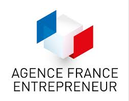
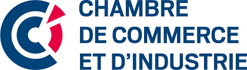
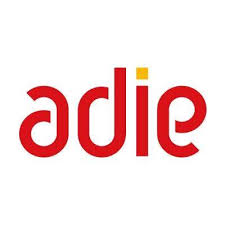
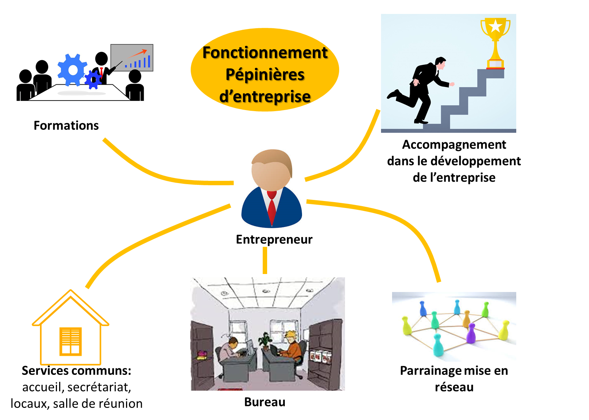
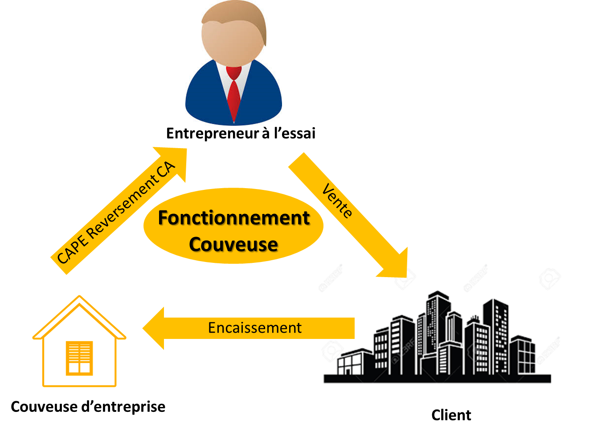
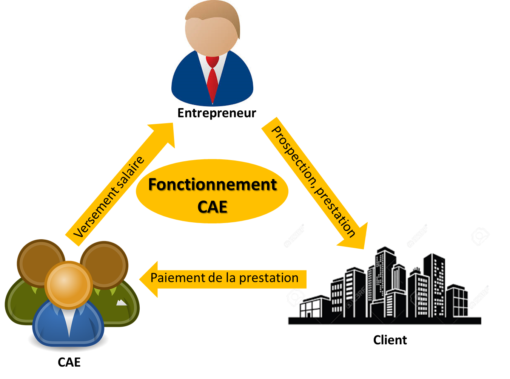
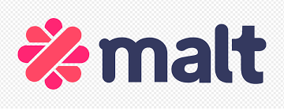
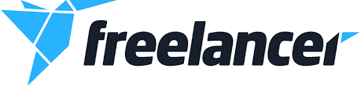

Entrepreneuriat
Tout le monde ne devient pas Mark Zuckerberg et toutes les start’up ne poussent pas aussi haut que Facebook, mais c’est de loin la voie la plus prometteuse pour un développeur de talent. Vous vous sentez bien seul face aux innombrables défis de l’entrepreneuriat ? Pour cela il existe en France des organismes et réseaux spécialisés qui peuvent devenir de précieux partenaires et vous accompagner dans votre projet de création d’entreprise ainsi que des aides financières dont vous pouvez bénéficier. Voici quelques organismes qui peuvent vous booster en apportant leur pierre à l’édifice de votre startup:
Agence France Entrepreneur:
L’Agence France Entrepreneur agit en faveur de l’entrepreneuriat aux niveaux local et national. Pour ce faire, elle accompagne et suit les entreprises en phase de lancement ou de développement, à l’aide de réseaux d’accompagnement, de financements ou encore d’experts-comptables.
Chambre de Commerce et d’Industrie:
Les chambres de Commerce et d’Industrie proposent des services d’accompagnement personnalisé, différents outils ainsi que des formations et ateliers pour aider les créateurs d’entreprise.

BPI France :
un autre organisme de référence pour vous aider à propulser votre entreprise. Son assistance est plutôt d’ordre financier avec des bourses, des avances de trésorerie ou encore des garanties bancaires.
Association pour le Droit à l’Initiative Economique:
C'est l’association pionnière du microcrédit en France. L’Adie propose de nombreuses solutions pour les créateurs de startup : micro-crédit, financement, assurance, accompagnement…
France Angels:
France Angels est une fédération agissant pour les Business Angels de France, ces investisseurs individuels qui participent au financement et à la création des entreprises innovantes. Vous tournez vers France Angels est donc une bonne solution pour trouver des financements.
Pépinière d'entreprises:
On les appelle aussi ruche ou couveuse d’entreprises,les pépinières d'entreprises sont des structures d’accueil, d’hébergement et d’accompagnement des nouvelles entreprises. Les pépinières d’entreprises permettent ainsi aux jeunes entreprises de disposer d’un appui considérable pour les aider dans leur lancement et leur développement. Elles proposent des locaux, des équipements et des services partagés permettant une réduction de charges, ainsi qu’un accompagnement personnalisé durant le développement de l’activité de l’entreprise. Le rôle des pépinières d’entreprise est donc de favoriser la réussite des créations d’entreprise en offrant des solutions aux entrepreneurs qui leur permettront de diminuer les obstacles au bon déroulement de leur projet.
Lien pour plus d'infos Couveuse d’entreprise :
les couveuses d'entreprise est une solution qui permet de tester grandeur nature un projet de création d’entreprise durant une période déterminée au cours de laquelle on commence de manière réelle et dans un cadre légal à facturer, prospecter, acheter, gérer, tout en étant accompagné et en préservant son statut et ses droits antérieurs.
Lien pour plus d'infos Le portage salarial pour les développeurs web :
Le portage salarial est une nouvelle forme d’emploi à mi-chemin entre entrepreneur et salarié, qui permet de développer une activité professionnelle indépendante, tout en conservant la couverture sociale d’un salarié classique. Le portage salarial permet au consultant qui le désire :
- • D’exercer son activité en toute autonomie : il facture ses interventions sous la forme d’honoraires.
- • De s’épargner le traitement administratif, juridique, fiscal et comptable lié à l’activité d’indépendant ou de freelance.
- • De conserver tous les avantages liés au statut de salarié.
CAE "LES COOPÉRATIVES D’ACTIVITÉ ET D’EMPLOI" :
un réseau qui permet de créer une entreprise au sein d’une coopérative d’activité et d’emploi. Elle offre un cadre sécurisant pour monter votre projet. En devenant associé d’une CAE, vous bénéficiez d‘une gesiton administrative allégée, d’un programme de formation ou encore d’un accompagnement de proximité. Plutôt que de créer sa propre structure, un nouvel entrepreneur peut rejoindre une coopérative d'activités et d'emplois (CAE). C'est un regroupement économique solidaire de plusieurs entrepreneurs. Cette forme d'entrepreneuriat collectif lui offre une solution plus sûre pour lancer son activité. Le porteur de projet qui rejoint une CAE bénéficie d'un cadre juridique existant, d'un statut d'entrepreneur salarié en contrat à durée indéterminée et d'une protection sociale. Toute la gestion administrative, fiscale et comptable est mutualisée. Ce cadre lui permet ainsi de se concentrer sur son activité, avec une sécurité accrue. Réelle plate-forme entrepreneuriale, la CAE permet aux entrepreneurs regroupés au sein d'une même structure de fertiliser leurs expertises et partager leurs retours d'expériences. Cette solidarité est ainsi génératrice d'opportunités de développement (innovation, apport d'affaires...).
Lien pour plus d'infos Freelance
Le freelance, c'est quoi ?
Être en freelance signifie travailler en tant qu'indépendant. On parle de statut de travailleur indépendant quand une personne physique est à la fois un entrepreneur, un propriétaire et son propre employé. Le travailleur freelance est affilié au régime des indépendants pour sa protection sociale. Être développeur freelance comporte de nombreux avantages, notamment le fait de devenir son propre patron. Vous décidez quelle mission vous voulez accepter et vous refusez celles qui ne vous intéressent pas. Le seul impératif est d’arriver à terminer les missions que vous avez acceptées.
Être son propre patron signifie donc faire vous-même votre emploi du temps, en fonction de vos méthodes de travail, de votre mode de vie ou même de votre vie de famille. Il en est de même pour les vacances, inutile d'attendre que votre patron valide votre congés,il suffit de prévenir votre client.
En freelance, il est aussi possible de travailler de n'importe où. Plutôt solitaire à la maison ? Plutôt en espace de co-working pour agrandir son réseau ? A l'étranger, au bord d'une piscine ? C'est à vous de choisir !
Démarrer en freelance
Avec tous ces avantages, vous êtes donc responsable de trouver des missions et de les accomplir.
Si vous venez de vous former et que vous débutez alors il vous faut vous perfectionner, ce n’est pas encore le moment de penser à l'argent.
Il est essentiel de débuter avec des petites missions, car si vous prenez un trop gros projet, les problèmes que vous risquez de rencontrer peuvent vous décourager. Lorsque vous vous sentirez plus à l’aise et plus expérimenté, alors vous pourrez viser d'autres objectifs, qu'ils soient créatifs ou financiers.
Il existe des plateformes de freelance sur lesquelles on peut s'inscrire :
 Si vous n’aimez pas l'idée de la chasse au client, alors vous pouvez passer par des boîtes de placement, qui s’occupent de trouver des missions pour vous en échange d’une commission.